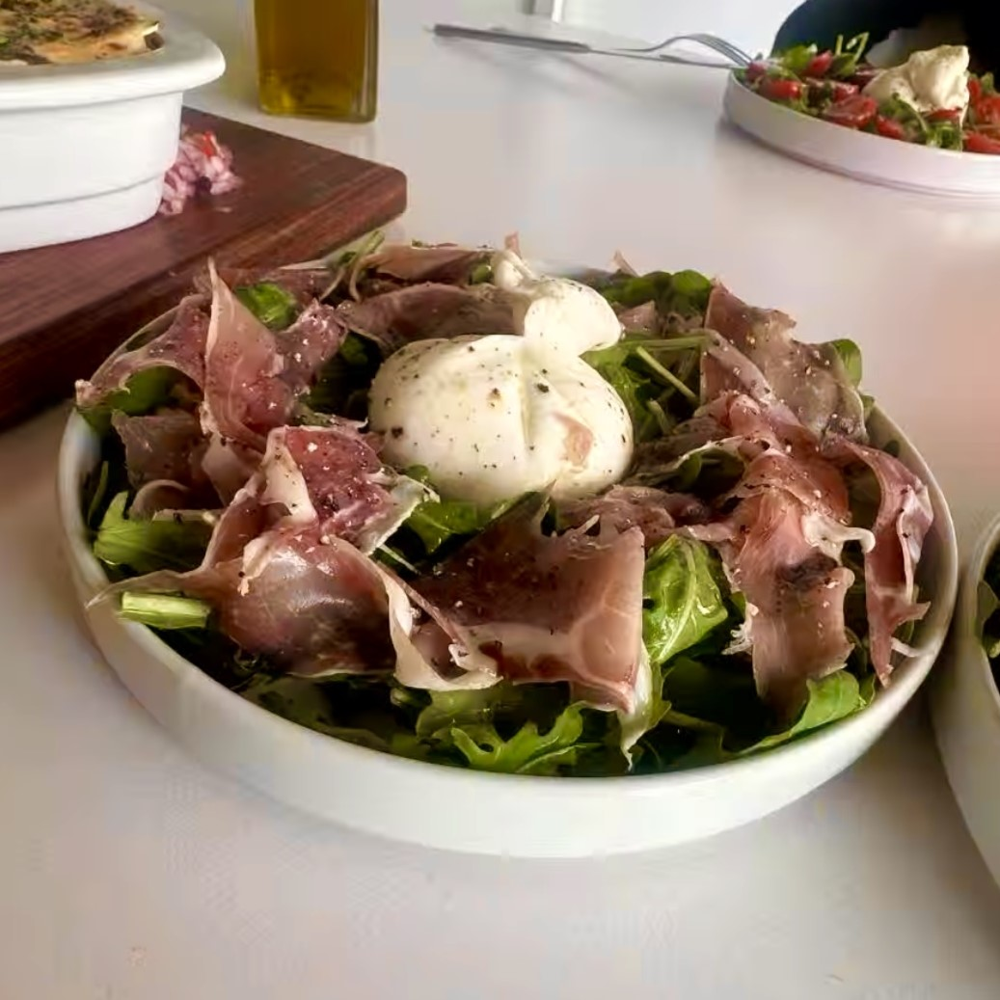
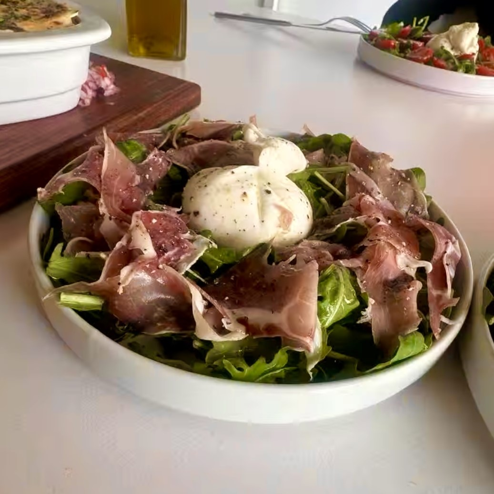

Customer Favourites
We personalise orders according to customer preference, here are some of the regularly placed orders:
 |
 |
|  |
At Kitchener's, we reccomend customer favorites, from our menu:
We personalise orders according to customer preference, here are some of the regularly placed orders:
|
|
|  |
Kitchener's was founded in 1906 whilst the bar has been running for over two decades, making it one of the oldest pubs in the city of Johannesburg, nestled in the heart of Braamfontein, that has stood the test of time. Kitcheners got revamped April-October 2024 and finally reopened with a new breath of life and same sense of authenticity.
We added a new courtyard for our newest addition, Little Kitchener's Pizzeria, because we believe in the power of fostering a vibrant community and strive to make a positive through the fresh food and drinks. At Little Kitcheners, we extend this same spirit to a more intimate setting, where good food, warm lighting, and great company create the perfect escape from the citys fast pace. We celebrate Johannesburs diversity by curating a mix of music, art, and experiences that reflect the dynamic energy of the people who call this city home. Our commitment is to remain an inclusive, creative, and unforgettable part of Joburg’s nightlife—where every night tells a different story.
Welcome to Kitcheners. Stay for the music, stay for the people, stay for the vibe.